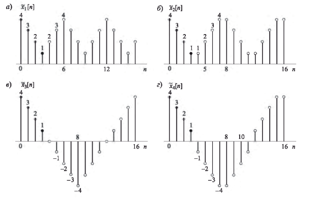

Общий вид ортогональных преобразований: $$x[n] = \sum_{n=0}^{N-1} A_k \phi_k[n] \hspace{10mm}(формула \hspace{2mm} синтеза)$$ $$ A[k] = \sum_{n=0}^{N-1} x[n] \phi_k^*[n] \hspace{10mm}(формула \hspace{2mm} разложения)$$ При этом базисные последовательности ортогональны: $$\frac{1}{N}\sum_{n=0}^{N-1}\phi_k[n]\phi_m[n]^* = \left\{ \begin{array}{rcl} {1} & \mbox{при} & m=k \\ 0 & \mbox{при} & m\neq k \end{array}\right. $$ В дискретном преобразовании Фурье базисные последовательности задаются следующим образом: $$\phi_k[n] = e^{\frac{j\pi kn}{N}}$$ Дискретное преобразование Фурье не сохраняет вещественность - коэффициенты разложения являются комплексными числами.
Другим примером ортогонального преобразования является дискретное косинусное преобразование (ДКП), базисными последовательностями которого являются косинусы. В отличие от ДПФ, ДКП сохраняет вещественность разложения. Также, из четности функции косинуса следует, что продолжение последовательности x[n] за отрезок [0, N - 1] будет периодичным и четным. Аналогично ДКП можно ввести и дискретное синусное преобразование (ДСП), периодическое продолжение которого будет обладать свойством нечетности.
Исходя из четности периодического продолжения ДКП, выделяют 4 основных способа продолжения за отрезок [0, N - 1]:
а) ДКП-1: период продолжения составляет 2N - 2, четная симметрия относительно точек 0 и N - 1 = 3
б) ДКП-2: период продолжения составляет 2N, четная симметрия относительно точек -0.5 и (2N - 1)/2 = 7/2
в) ДКП-3: период продолжения составляет 4N, четная симметрия относительно точек 0 и 2N = 8
г) ДКП-4: период продолжения составляет 4N, четная симметрия относительно точек -0.5 и 2N - 1/2 = 15/2
Наиболее часто используемыми вариантами ДКП являются ДКП-1 и ДКП-2. Различие между ними заключаются в том, накладываются ли друг на друга краевые отсчеты сдвинутых версий последовательности, и если накладываются, то какие именно.
Наложение краевых отсчетов в ДКП-1 приводит к необходимости введения для них весового коэффициента α[n]. Разложение ДКП-1 выглядит следующим образом: $$X^{C1}[k] = 2\sum_{n=0}^{N-1} \alpha[n]x[n]cos(\frac{\pi kn}{N - 1}) \hspace{10mm} 0 \leq k \leq N - 1$$ $$x[n] = \frac{1}{N-1}\sum_{k=0}^{N-1} \alpha[k]X^{C1}[k]cos(\frac{\pi kn}{N - 1}) $$ $$\alpha[n] = \left\{ \begin{array}{rcl} {\frac{1}{2}} & \mbox{при} & n=0, n=N-1 \\ 1 & \mbox{при} & 1 \leq n \leq N-2 \end{array}\right. $$
Особенности периодического продолжения в ДКП-2 приводят к необходимости введения весового коэффициента β[n] только с одного края. Разложение ДКП-2 выглядит следующим образом: $$X^{C2}[k] = 2\sum_{n=0}^{N-1} \beta[n]x[n]cos(\frac{\pi k (2n+1)}{2N}) \hspace{10mm} 0 \leq k \leq N - 1$$ $$x[n] = \frac{1}{N}\sum_{k=0}^{N-1} \beta[k]X^{C2}[k]cos(\frac{\pi k(2n+1)}{2N}) $$ $$\beta[n] = \left\{ \begin{array}{rcl} {\frac{1}{2}} & \mbox{при} & n=0 \\ 1 & \mbox{при} & 1 \leq n \leq N-1 \end{array}\right. $$
Ряд косинусов является ортогональным, но не является ортонормированным базисом. Чтобы базис стал ортонормированным потребуется нормализующий множитель (на примере ДКП-2): $$X^{C2}[k] = \sqrt{\frac{2}{N}}\beta[k]\sum_{n=0}^{N-1} x[n]cos(\frac{\pi k (2n+1)}{2N}) \hspace{10mm} 0 \leq k \leq N - 1$$ $$x[n] = \sqrt{\frac{2}{N}}\sum_{k=0}^{N-1} \beta[k]X^{C2}[k]cos(\frac{\pi k(2n+1)}{2N}) $$ $$\beta[k] = \left\{ \begin{array}{rcl} {\frac{1}{\sqrt{2}}} & \mbox{при} & k=0 \\ 1 & \mbox{при} & 1 \leq k \leq N-1 \end{array}\right. $$
ДКП-2 и ДПФ связаны через 2N-точечное ДПФ N-членной последовательности следующим образом: $$ X^{C2}[k] = 2Re\{X[k]e^{\frac{-j\pi k}{2N}}\} \hspace{10mm} 0 \leq k \leq N - 1$$ И через 2N-точечное ДПФ симметричного продолжения x[n] по правилам ДКП-2: $$ X^{C2}[k] = X[k]e^{\frac{-j\pi k}{2N}} \hspace{10mm} 0 \leq k \leq N - 1$$ Отсюда ДКП-2 (и другие типы ДКП, но по другим формулам связи) можно вычислять с помощью БПФ.
Обратное ДКП-2 через обратное ДПФ: $$ X[k] = X^{C2}[k]e^{\frac{j\pi k}{2N}} \hspace{10mm} 0 \leq k \leq N - 1$$ С учетом симметрии ДКП-2 $$ X^{C2}[2N-k] = -X^{C2}[k] $$ получаем: $$X[k] = \left\{ \begin{array}{rcl} X^{C2}[0] & \mbox{при} & k=0 \\ X^{C2}[k]e^{\frac{j\pi k}{2N}} & \mbox{при} & 1 \leq k \leq N-1 \\ 0 & \mbox{при} & k=N \\ -X^{C2}[2N - k]e^{\frac{j\pi k}{2N}} & \mbox{при} & N+1 \leq k \leq 2N-1 \end{array}\right. $$
Коэффициенты ДКП-2 конечной последовательности сконцентрированы в нижних индексах (см. пример в ноутбуке ниже), то есть обнуление остальных его отсчетов не влечет за собой существенной потери энергии сигнала. Поэтому ДКП-2 используется в алгоритмах сжатия данных - MP3, JPEG, MPEG.
Теорема Парсеваля для ДКП-2: $$\sum_{n=0}^{N-1}|x[n]|^2 = \frac{1}{N}\sum_{n=0}^{N-1}\beta_k|X^{C2}[k]|^2$$
Ноутбук: уплотнение энергии в ДКП-2
Открыть в Colab
Открыть на Github
Скачать на устройство